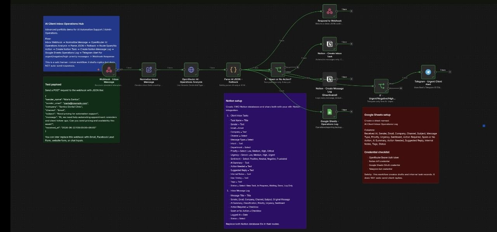

Lead
Lead & CRM Workflows
Capture leads, classify intent, score priority, log records, and send follow-up alerts.
I help founders and small teams turn leads, inboxes, tasks, reports, ecommerce data, and recurring admin work into simple AI-assisted workflows with n8n, Sheets, Notion, Telegram alerts, and clear documentation.
A clear service site for practical workflow help: setup, testing, documentation, and small automations built with human review and honest scope.
Capture leads, classify intent, score priority, log records, and send follow-up alerts.
Organize client messages by urgency, sentiment, department, and next action.
Turn forms, emails, tasks, and trackers into simple repeatable workflows.
Product data structure, draft listings, variants, descriptions, and review checklists.
Collect updates, filter sources, prepare summaries, and organize content ideas.
Clear checklists, setup notes, testing steps, and workflow handoff documents.
Each demo is written as a business workflow: problem, process, tools, and value — not just technical screenshots.
New inquiry → AI summary/score → Notion CRM → Sheets backup → Telegram alert.
Message → intent/urgency/sentiment → task → log → alert for important items.

Product link/data → title/description/SEO → variants → Shopify draft for review.
Telegram ordering support with staff notifications, order tracking, and reporting.
RSS collection, filtering, deduplication, tracking, and content planning support.
Use the quick picker below to choose a starting workflow idea.
I focus on clear scope, tested outputs, and simple documentation so clients can trust what was built.
Clarify manual steps, tools, fields, and the real output needed.
Create the workflow, tracker, or document using sample data first.
Check outputs, edge cases, alerts, and errors before relying on it.
Write simple notes, SOPs, and next improvement ideas.
This is good for clients who want to check my communication, workflow logic, and testing process first.
Use the form for Netlify deployment, or the email/LinkedIn buttons. If the form does not submit on GitHub Pages, use the email button.